前排先恭喜樊振东夺得巴黎奥运会乒乓球男子单打金牌！这也是中国代表团在巴黎拿到的第17块金牌。
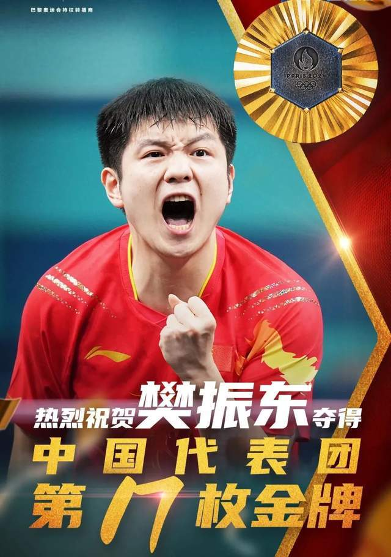
圈内明星、主持人也都第一时间为樊振东送上祝福，开启了又一次文体圈大联欢。这里就不一一展示了，如此美好时刻，再多祝福都不嫌多！
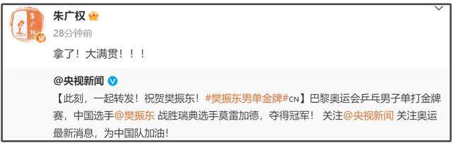
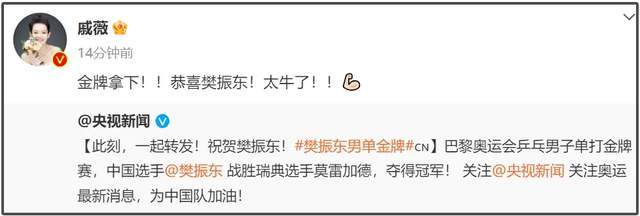
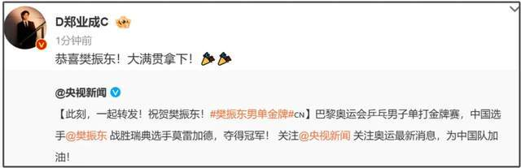
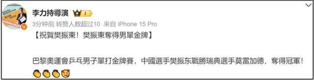
还有樊振东喜欢的足球俱乐部皇家马德里，也是积极发文祝贺了这一位特别的球迷，盛赞了他的拼搏精神。
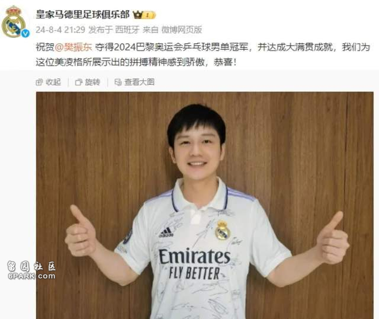
要知道樊振东三次获得胜利，都做了皇马俱乐部球星同款庆祝姿势，如今获得喜欢的俱乐部祝贺，堪称双向奔赴了。
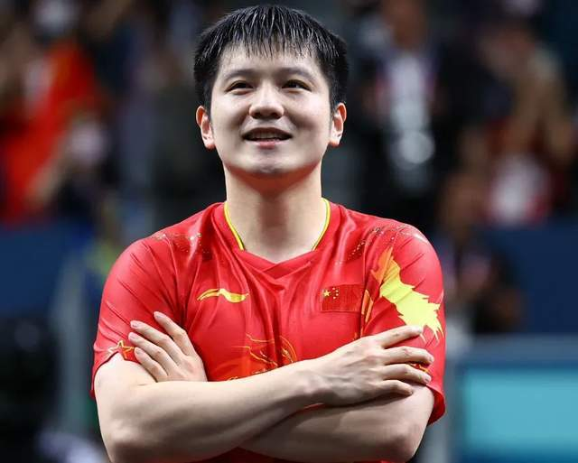
回顾樊振东巴黎奥运会圆梦之旅，可谓跌宕起伏、荡气回肠，经历了被分到死亡半区不被看好以及队友爆冷出局，樊振东成为乒乓球男子单人唯一夺冠种子，他带着四强逆转晋级、半决赛30分钟速通的决然姿态，一路拼到了决赛，对战来自瑞典的22岁小将特鲁斯·莫雷加德。
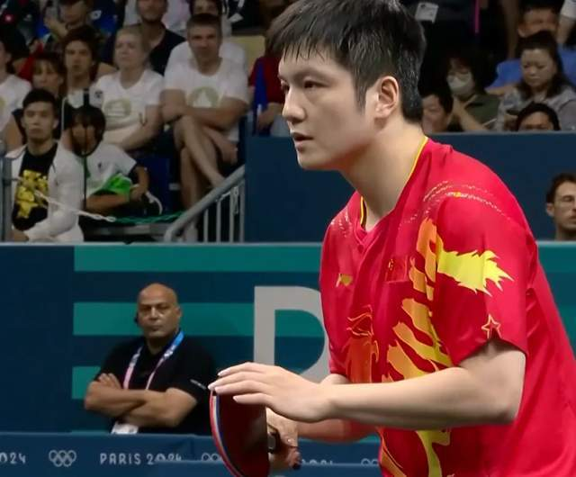
——第一局7：11！第二局11：9！第三局11：9 ！第四局11:8 ！第五局11:8！
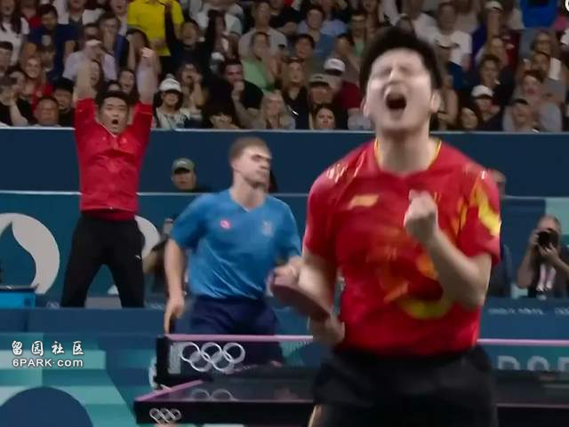
樊振东实现超级大满贯！拿下巴黎奥运会乒乓球男子单人金牌，成了继马龙、邓亚萍之后第三位超级全满贯的国乒选手，可喜可贺！
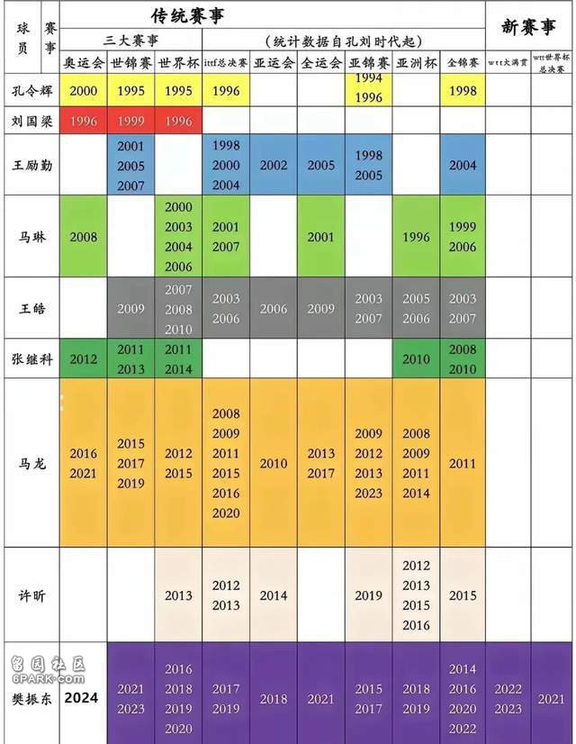
在现场为樊振东加油的马龙，在赛后高高举起樊振东的王皓，都成了樊振东实现大满贯梦想的名场面。
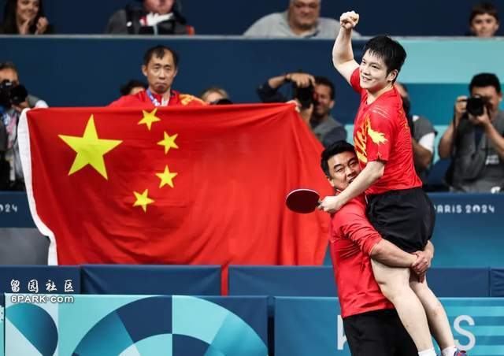
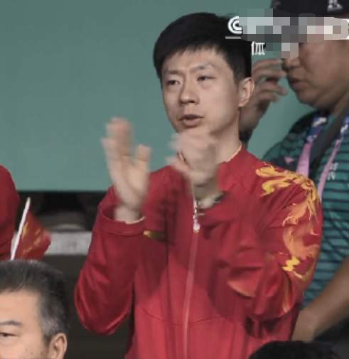
还记得樊振东本人转发巴黎奥运会乒乓球运动员名单的时候，留下了一句了“Last dance”，意为最后一舞，让外界很是担心他的状态，还好如今结局圆满，这位来自八一队被曾经的国乒三剑客一手带大的小胖，不知不觉已经独当一面了，27岁正是拿大满贯的年纪呢。
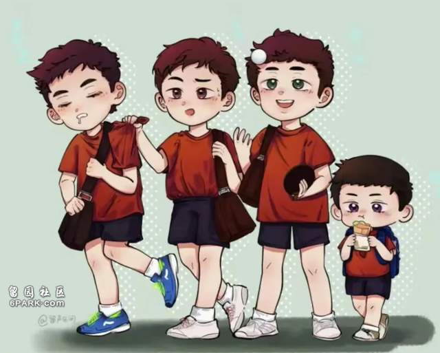
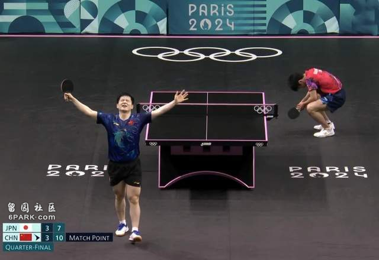
没能陪伴在樊振东身边的队友林高远的祝贺看上去不及外人兴奋，但也许更能让人体会到运动员们心情——正如林高远所说，每一枚金牌都历经风雨，请大家继续为中国队加油，中国乒乓球队还有金牌要争夺呢。
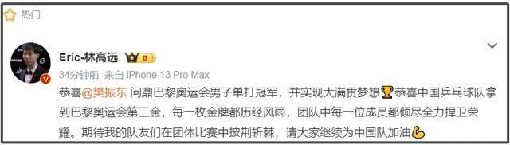
最后就用这一次巴黎奥运会乒乓球男子单打金牌赛的超高收视来结尾吧。
——这不是复仇之战，这是独属于樊振东圆梦之旅，他的超级大满贯大结局收视最高破9.9%！
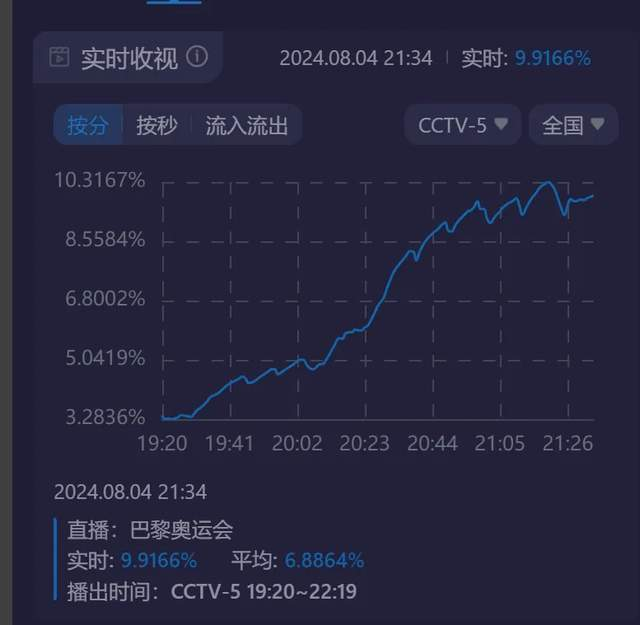
后续颁奖礼收视都全程维持在9%以上，可见大家都想见证樊振东登上领奖台挂上金牌那一刻，真心为他感到高兴和开心！
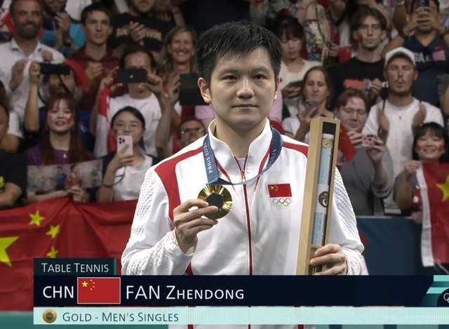
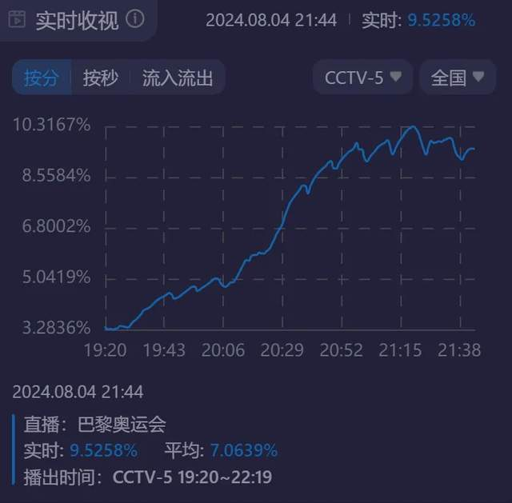
——从四个人的里约到三个人的东京，樊振东都在，再次恭喜小胖夺冠圆梦超级大满贯，一人守住了两个人的巴黎！